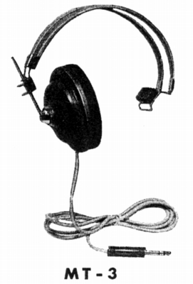
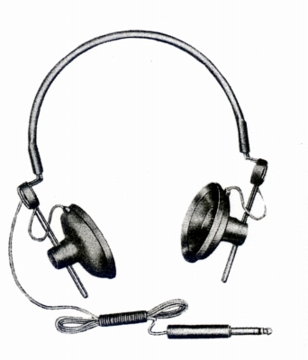
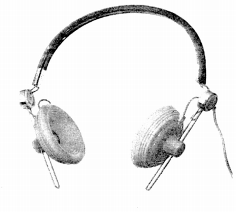
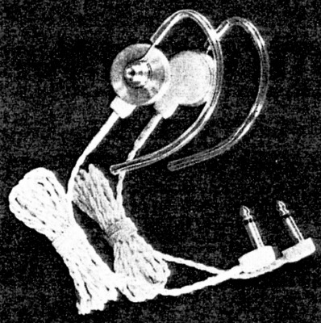
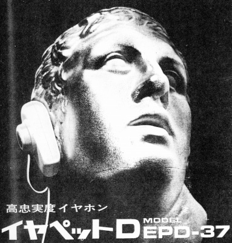
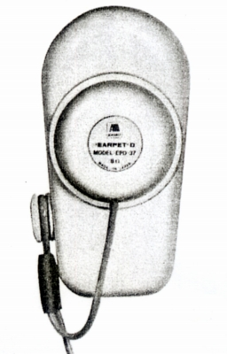

アシダのその他の製品
明らかにステレオタイプではなく、モノラル仕様なので本編のページでは扱わなかったが、アシダの1960年代から70年代初頭の製品にはユニークな製品が多かった。
ＭＴ-3

現行カタログにものっている片耳ヘッドフォン。
ST-3ベースなのか？すでに1964年には登場していた。
ST-9
 
1964年登場の学術会議用のモノラルヘッドフォン。
AKGのK50に似ている。右側はゴムクッションを装着した状態。
後年のST-7やST-90のベースモデルなのかもしれない。
ハイインピーダンス型イヤホン

1966年の広告に登場のイヤフォン。
GE、RCA、フィリップスなどに納入していたという。
耳掛け型のデザインが斬新。
EDP-37
 
1970年の広告に登場の高忠実度イヤフォン。
36�o径の合成樹脂振動板のダイナミック型。
再生周波数帯域は30-14,000Hzと立派なもの。